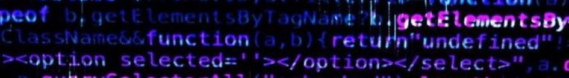
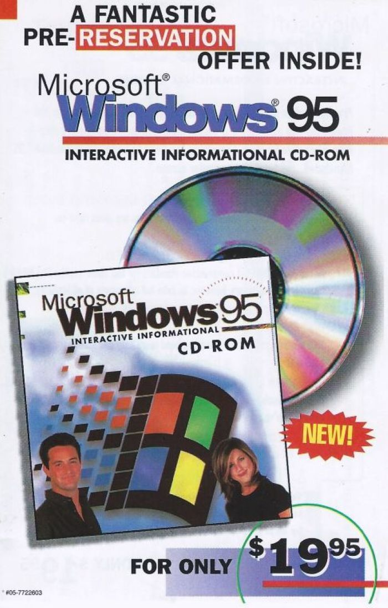
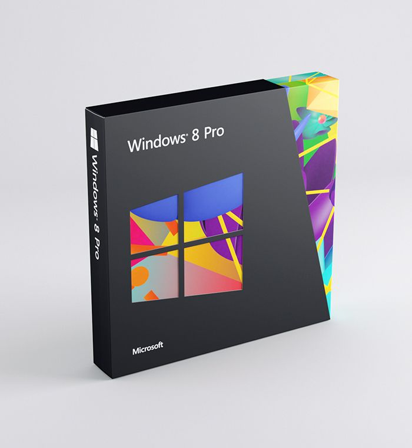

Windows Design Through Time
Microsoft Windows has played a major role in shaping how people interact with computers. Since its introduction in the 1980s, Windows has gone through many visual and functional changes as technology, user needs, and design trends evolved.
What This Site Covers

- Important Windows design eras
- Visual and usability changes over time
- How design decisions affected user experience
- The transition from desktop-focused to touch-focused design
Featured Eras
Each new Windows era introduced new ideas that shaped the future of operating systems and digital design. This website will focus on key, iconic eras.

